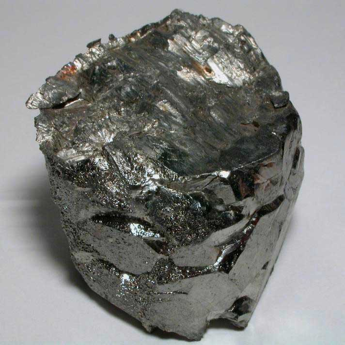

Гафний

Га́фний (химический символ — Hf, от лат. Hafnium) — химический элемент 4-й группы (по устаревшей классификации — побочной подгруппы четвёртой группы, IVB) шестого периода периодической системы химических элементов Д. И. Менделеева, с атомным номером 72. Относится к переходным металлам. Из-за химической схожести с цирконием он стал последним открытым нерадиоактивным элементом (то есть имеющим стабильные изотопы), его открыли только в 1923 году.Простое вещество гафний — тяжёлый тугоплавкий металл серебристо-белого цвета.
Положение гафния в периодической системе предсказано Д. И. Менделеевым в 1870 г. Элемент был обнаружен Г. К. фон Хевеши и нидерландским физиком Д. Костером в 1923 г. при рентгеноспектральном анализе руд циркония; название происходит от позднелатинского Hafnia, что означает Копенгаген – место открытия элемента. В ковком состоянии впервые получен нидерландскими химиками Я. Х. де Буром и А. ван Аркелом в 1925 г.
Содержание гафния в земной коре 3,2·10–4 % (по массе); гафний принадлежит к рассеянным элементам, не имеет собственных минералов и в природе сопутствует цирконию. Наиболее богаты гафнием редкие минералы наэгит, малакон (оба содержат до 7,0 % по массе гафния) и альвит (до 15 % по массе).Гафний получают попутно с цирконием из концентратов циркониевых руд, обогащённых гафнием; от соединений Zr отделяют методами жидкостной экстракции в нитратных средах или солевой ректификацией тетрахлоридов. Металлический гафний в виде губки производят восстановлением тетрахлорида гафния магнием, в виде слитка – тетрафторида гафния кальцием. В виде порошка гафний получают восстановлением диоксида кальцием при 1000–1100 °C или гексафторогафната калия K2HfF6 натрием в расплаве NaCl – KCl при 700–800 °C, а также электролитическим восстановлением K2HfF6 и других солей в расплаве NaCl – KCl при 700–900 °C. Чистый гафний получают методом иодидного рафинирования по обратимой транспортной химической реакции образования и термического разложения HfI4 в атмосфере паров иода. Особо чистый гафний получают электронно-лучевой плавкой иодидного гафния.Соединения гафния применяют при изготовлении органов регулирования ядерных реакторов, защитных контейнеров, боксов и экранов при хранении, транспортировке и переработке ядерного топлива. Гафний используют для легирования жаропрочных сплавов в авиационной и судостроительной промышленности, в качестве материала катодов плазменных установок. Интерметаллические соединения гафния с Со и Ni – основа катализаторов гидрогенизации и гидрогенолиза органических соединений. Диоксид гафния используют при изготовлении керамики, тетрафторид гафния – как компонент фторидных стёкол. Тугоплавкие соединения гафния применяют в виде износостойких покрытий инструментов, лопаток газовых турбин.